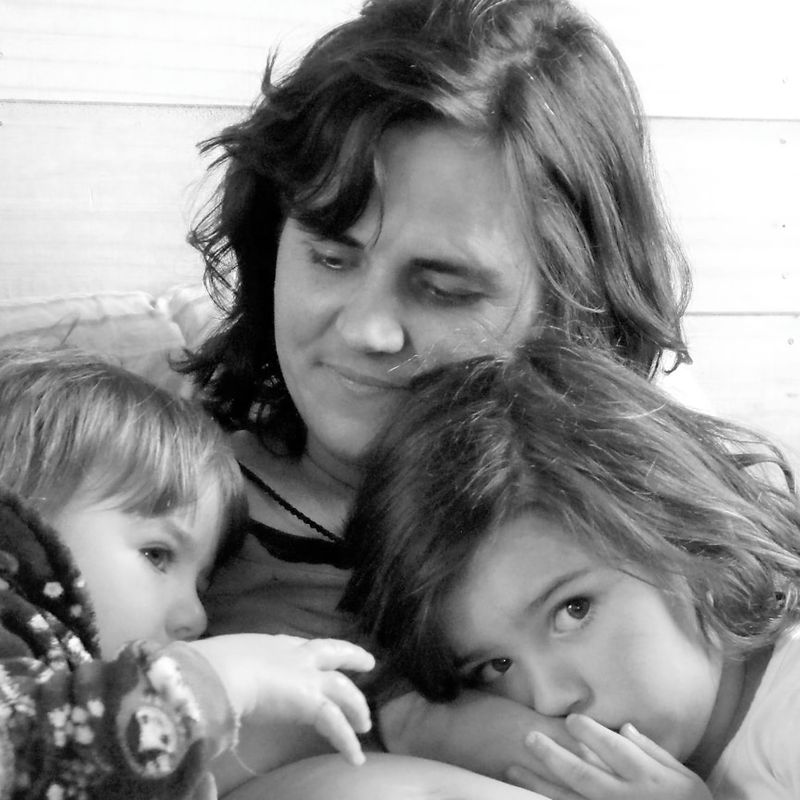

כשהוא מתפרץ והשני נסחף: איך עוזרים לשניהם?
הגיע הזמן ללכת מהגינה. ילד אחד נשכב על הרצפה וצורח, ובדיוק אז גם אחיו מתחיל לבכות ורוצה על הידיים. ברגע אחד אתם צריכים לשמור על הגבול, לעזור לילד שמתפרץ ולא להשאיר את אחיו בלי מענה.
כדי לדעת איך להגיב ברגע הזה, צריך קודם להבין מה קורה לילד ומה הופך את ההתפרצות למורכבת עוד יותר כשיש שני ילדים קטנים.
גם אצלכם זה נראה ככה?
אחד מתחיל לצרוח, ובתוך רגע גם השני בוכה.
אתם מסבירים שוב ושוב, אבל הילד לא מצליח להקשיב.
אתם מוותרים על הגבול רק כדי לעצור את הצעקות.
הרגע עובר, ואתם נשארים עם תחושת אשמה על הדרך שבה הגבתם.
אתם לא מפספסים משפט קסם שהיה אמור לגרום לילד להירגע. כשהילד נמצא בתוך טנטרום, היכולת שלו לעצור, להקשיב ולהסביר מה הוא צריך מוגבלת. וכשיש בבית שני ילדים קטנים, אתם לא מתמודדים רק עם ההתפרצות אלא גם עם הילד השני שנמצא בתוכה יחד איתכם.
מה עובר לכם בראש ברגע הזה?
- ״למה הוא מתפרק בגלל דבר כל כך קטן?״
- ״למה הוא לא יכול פשוט לומר מה הוא רוצה?״
- ״ואיך אני אמורה לעזור לו כשהשני כבר בוכה?״
אז רגע לפני ששואלים ״איך עוצרים את ההתפרצות?״, כדאי לשאול: מה הילד שלי מנסה להגיד עכשיו, כשהמילים שלו עדיין לא מספיקות?
מה קורה לילד
אבל רגע, מהו בעצם טנטרום?
טנטרום הוא התפרצות שמגיעה כשהילד פוגש רגש או קושי שגדולים כרגע מהיכולת שלו להתמודד איתם. הוא יכול לבכות, לצרוח, לבעוט, להישכב על הרצפה או לדחות כל ניסיון שלכם להתקרב.
זה לא אומר שהילד מתכנן להקשות עליכם. ברגע הזה קשה לו לעצור את התגובה, להסביר מה הוא מרגיש או לחשוב על פתרון אחר.
הוא לא זקוק לעוד הסבר על למה חייבים ללכת הביתה. קודם הוא צריך לעבור את הרגע שבו כל מה שהוא מרגיש יוצא בבת אחת.
מה מצטבר לפני
אבל למה זה קורה בגלל דבר כל כך קטן?
הרבה מהכאוס מתחיל כשאנחנו מגיבים רק למה שרואים: הצעקות, הבעיטות או ההשתטחות. אבל ההתנהגות היא רק החלק החיצוני.
מבחינת הילד, ההתפרצות בדרך כלל לא התחילה ברגע שבו אמרתם ״לא״. לפעמים היא התחילה עוד קודם:
- הוא עייף או רעב.
- הוא נדרש לעצור משהו שהיה שקוע בו.
- משהו לא קרה כפי שציפה.
- הוא רצה לעשות לבד ולא הצליח.
- לאורך היום הצטברו בו עוד ועוד תסכולים.
העוגייה, הצעצוע או היציאה מהגינה הם לפעמים רק הרגע שבו כל מה שהצטבר יוצא החוצה.
ועם ילדים צמודים נוסף עוד קושי: ההתפרצות של אחד משפיעה מיד גם על השני. לכן ״הורות בדאבל״ מתחילה בהבנה של מה כל ילד צריך לפני שמחליטים איך להגיב.
חשבו על ההתפרצות האחרונה אצלכם. מה קרה בחצי השעה שלפניה? האם הילד היה עייף, רעב, מאוכזב או באמצע משהו שהיה לו קשה להפסיק?
למה המילים לא עובדות
למה ההסברים שלנו לא עוזרים באמצע ההתפרצות?
כשהילד רגוע, הוא יכול לשמוע, לענות וללמוד. כשהוא מוצף, קשה לו להשתמש ביכולות האלה. לכן גם הסבר נכון והגיוני עלול לא להגיע אליו באותו הרגע.
ככל שנוסיף יותר מילים, שאלות ודרישות, הוא עלול להתקשות עוד יותר. יש מקום להסברים, אבל צריך לבחור את הרגע שבו הילד מסוגל לשמוע אותם.
אם הילד לא מצליח להקשיב כרגע, עוד הסבר כנראה לא יעזור לו.
מה משתנה כשיש שניים
ומה משתנה כשיש ילדים צמודים?
עם ילד אחד, אפשר לפעמים לעצור הכול ולהישאר לידו עד שהסערה חולפת. עם שני ילדים קטנים, המציאות שונה:
- הבכי של אחד משפיע לא פעם גם על השני.
- שניהם עדיין זקוקים לעזרה ולקרבה.
- כל אחד מהם נמצא בשלב התפתחותי אחר.
- בזמן שאתם עוזרים לאחד, השני עלול להרגיש שנשאר בחוץ.
- קשה יותר להישאר רגועים כששתי תגובות מתרחשות יחד.
לפעמים אתם מוותרים על הגבול פשוט מפני שאין לכם עוד ידיים להחזיק את שני הרגעים. זו מציאות שדורשת כלים שמתאימים לשניים.
הילד השני
גם הילד השני נמצא בתוך ההתפרצות
הילד שאינו מתפרץ עדיין שומע את הצעקות, רואה את המתח ומרגיש שתשומת הלב שלכם עברה לאחיו. הוא עשוי להתחיל לבכות, להיצמד אליכם, לבקש משהו בדיוק עכשיו או אפילו לעשות דבר שהוא יודע שיעצור אתכם.
לא בהכרח מפני שהוא ״מחפש תשומת לב״ בכוונה, אלא מפני שגם הוא זקוק לעזרה בתוך מה שקורה סביבו.
גם אצלכם טנטרום של אחד הופך בתוך רגע לבכי של שניהם?
מה שאני רואה
מה הטנטרום לא אומר?
הטנטרום לא אומר בהכרח:
- שהילד מפונק.
- שהוא מנסה לשלוט בכם.
- שהגבול שהצבתם היה שגוי.
- שאתם צריכים לוותר כדי להרגיע אותו.
- שנכשלתם כהורים.
אפשר להציב גבול נכון ועדיין לפגוש בכי וכעס. המטרה של הגבול היא להוביל את הסיטואציה, ובמקביל לעזור לו להתמודד עם האכזבה, גם אם הוא לא מרוצה ממנו.
הבנתם למה זה קורה. אבל מה עושים כשהוא כבר צורח?
- איך מגיבים בלי להוסיף עוד לחץ?
- מה אומרים כשהמילים נגמרות?
- איך שומרים על הגבול גם כשהילד בוכה?
- ולמי ניגשים קודם כשהאח השני מצטרף?
בשביל הרגעים האלה יצרתי את המדריך הדיגיטלי:
״כשהבית מתפוצץ״
מדריך מעשי לטנטרומים והתפרצויות במשפחה עם ילדים צמודים. המדריך יעזור לכם לדעת מה לעשות לפני ההתפרצות, איך לפעול בזמן ההתפרצות ואחריה, גם כשהבכי מתחיל להגיע משני הכיוונים.
אני רוצה לדעת מה לעשות ברגע הזהמה תלמדו במדריך?
לזהות מה מתחיל להצטבר
איך לזהות עייפות, רעב, תסכול ושינויים שעלולים להוביל להתפרצות עוד לפני שהיא מתחילה.
להגיב בזמן ההתפרצות
מה לעשות כשהילד בוכה, צורח, בועט או לא רוצה שתתקרבו אליו.
לדעת מה לומר
משפטים קצרים שאפשר להשתמש בהם גם כשהילד לא מסוגל להקשיב להסבר ארוך וגם לכם כבר נגמרו המילים.
לשמור על הגבול
איך לתת מקום לבכי ולכעס בלי לחזור בכם רק כדי שהצעקות ייפסקו.
לעזור לשני הילדים
איך לחשוב על סדר הפעולות כשאחד מתפרץ והשני זקוק לכם באותו הרגע.
לחזור לרגע אחרי שהוא עבר
מה כדאי לעשות כשהילד נרגע, ואיך להשתמש ברגעים השקטים כדי להתכונן לפעם הבאה.
המדריך בנוי לפי הרגעים שאתם פוגשים בבית
לפני
לזהות מה עומד להתפוצץ ולהפחית חלק מהחיכוכים מראש.
בזמן
להבין מה לעשות ומה לומר כשהילד כבר מוצף.
כששניהם צריכים אתכם
לבחור למי לגשת קודם ולתת גם לילד שמחכה תחושה שרואים אותו.
אחרי
לחזור לחיבור, לדבר על מה שקרה ולהמשיך הלאה בלי נאום ובלי עונש.
הורים מספרים

אם עוד לא הכרנו
שקמה דגרי
אני שקמה דגרי, מדריכת הורים ויועצת שינה מוסמכת לגיל הרך, בוגרת מצטיינת בהכשרות להדרכת הורים ולייעוץ שינה בגישה ההוליסטית, ואמא לצמודים בהפרש של שנה וחודש.
מתוך החיים עם שני קטנטנים והעבודה עם משפחות יצרתי את שיטת ״הורות בדאבל״, דרך שעוזרת להבין מה כל ילד צריך ולדעת איך להגיב גם כששניהם צריכים אתכם יחד.
אני בעלת תואר ראשון במדעי ההתנהגות ותואר שני בייעוץ ארגוני, ומנהלת את קהילת ״אמאל׳ה צמודים״, שבה חברים יותר מ־300 הורים. את ״כשהבית מתפוצץ״ כתבתי מתוך הרגעים שבהם שני ילדים מתפרצים באותו הרגע, בסלון שלי ובבתים של המשפחות שאני מלווה. עוד עליי · הליווי האישי
למי המדריך מתאים?
- להורים לילדים בגיל הרך שחווים טנטרומים והתפרצויות.
- להורים שהתפרצות של ילד אחד משפיעה אצלם גם על אחיו.
- למי שמוצאים את עצמם מסבירים, מאיימים או מוותרים רק כדי שהרגע ייגמר.
- למי שרוצים להבין מה לעשות בלי לצפות מהילד להפסיק מיד לבכות.
- להורים שרוצים כלים שאפשר לחזור אליהם בקצב שלהם.
הכלים מתאימים גם למשפחות שהילדים בהן אינם בהפרש של עד שנתיים. לצד העקרונות הכלליים, המדריך נותן מקום מיוחד למצבים שבהם שני ילדים קטנים צריכים את ההורה יחד.
טנטרומים הם חלק מהגיל הרך
לא כל התפרצות ניתנת למניעה. המטרה היא שתדעו:
- לזהות מה הילד צריך.
- לא להיבהל מהבכי.
- לשמור על הגבול כשצריך.
- לעזור לשני הילדים.
- לסיים את הרגע עם פחות חוסר אונים ואשמה.
הטנטרום הבא אולי עדיין יגיע. אבל אתם לא חייבים להגיע אליו בלי לדעת מה לעשות.
שאלות נפוצות
האם טנטרומים בגיל שנתיים הם נורמליים?
טנטרומים נפוצים בגיל הרך, כשהרצונות והרגשות של הילד כבר חזקים אבל היכולת שלו לעצור, לחכות ולהסביר במילים עדיין מתפתחת.
אם ההתפרצויות חריגות בעוצמתן או בתדירותן, כוללות פגיעה משמעותית בילד או באחרים, או אם משהו בהתפתחות או בהתנהגות שלו מדאיג אתכם, כדאי להתייעץ גם עם גורם מקצועי מתאים.
האם המדריך מתאים רק לילדים צמודים?
לא. העקרונות במדריך מתאימים להורים לילדים בגיל הרך. בנוסף, הוא מתייחס באופן מיוחד למציאות שבה ילד אחד מתפרץ והשני זקוק להורה באותו הזמן.
האם המדריך יעזור להפסיק את ההתפרצויות?
המדריך אינו מבטיח להעלים כל טנטרום. הוא יעזור לכם להבין מה עשוי להוביל להתפרצות, להפחית חלק מהחיכוכים ולדעת איך להגיב כשהיא מגיעה.
מה אם הילד לא רוצה חיבוק או מגע בזמן הטנטרום?
לא כל ילד רוצה מגע כשהוא מוצף, ואין צורך לכפות אותו. במדריך תלמדו איך להישאר נוכחים ולעזור גם כשהילד אינו רוצה שתתקרבו.
מה עושים כששני הילדים בוכים יחד?
אין כלל שלפיו תמיד ניגשים לצעיר או תמיד לבכור. צריך לבדוק מי זקוק לעזרה דחופה יותר, מי יכול להמתין לרגע ואיך אפשר להראות גם לילד השני שאתם רואים אותו. במדריך נעמיק בדרך שבה מקבלים את ההחלטה ופועלים בתוך הרגע.
אין לי זמן לקרוא מדריך ארוך. האם צריך לקרוא הכול בבת אחת?
לא. המדריך בנוי כך שתוכלו להתחיל מהחלק שרלוונטי למה שקורה אצלכם ולחזור אליו בכל פעם שעולה קושי. מומלץ לקרוא אותו בהדרגה ולנסות בכל פעם כלי אחד.
איך מקבלים את המדריך?
לאחר הרכישה תישלח אליכם גישה אישית לצפייה במדריך באמצעות כתובת הדוא״ל שמסרתם.
ומה אם אנחנו צריכים עזרה שמתאימה למשפחה שלנו?
אם הקושי חוזר, אם ניסיתם כלים שונים ולא ברור למה הם אינם מחזיקים, או אם אתם מתמודדים עם כמה נושאים יחד, יכול להיות שליווי אישי יתאים יותר.
רוצים לדעת מה לעשות לפני ההתפרצות, בתוכה ואחריה?
״כשהבית מתפוצץ״ יעזור לכם להבין איך לפעול ברגעים שבהם הילד מוצף, גם כשאחיו כבר מתחיל לבכות ואתם צריכים לתת מענה לשניהם. המדריך הדיגיטלי המלא:
99 ₪ אני רוצה לדעת מה לעשות ברגע הזההגישה נשלחת באופן אישי, בדרך כלל בתוך זמן קצר בשעות הפעילות ולא יאוחר מיום עסקים אחד.
הגישה ניתנת לצפייה באמצעות כתובת הדוא״ל שאושרה ב־Google Drive. המדריך אינו ניתן להורדה או להעברה.
בלחיצה על כפתור הרכישה אתם מאשרים שקראתם והסכמתם לתנאי השימוש, הרכישה, האספקה והביטולים ולמדיניות הפרטיות.